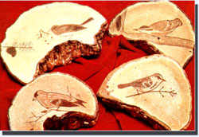

STAFF PHOTOS
A tidy little home business can be built around decorating artist's fungi with designs such as those shown here. All that's needed are some bracket mushrooms?they literally grow on trees!?an engraving tool (a sharp nail or even a dry fountain pen will do), and some polyurethane varnth hey protect your masterpiece.